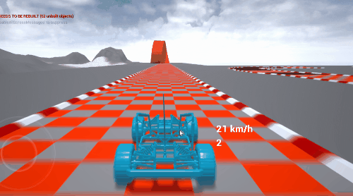
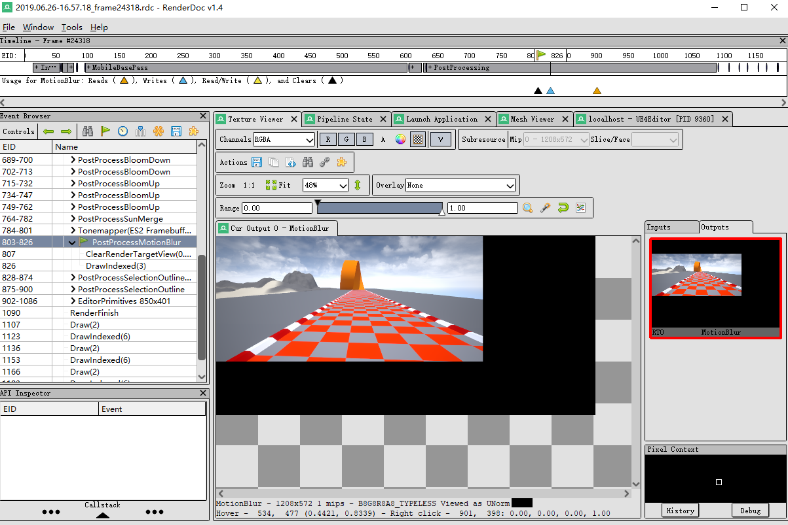
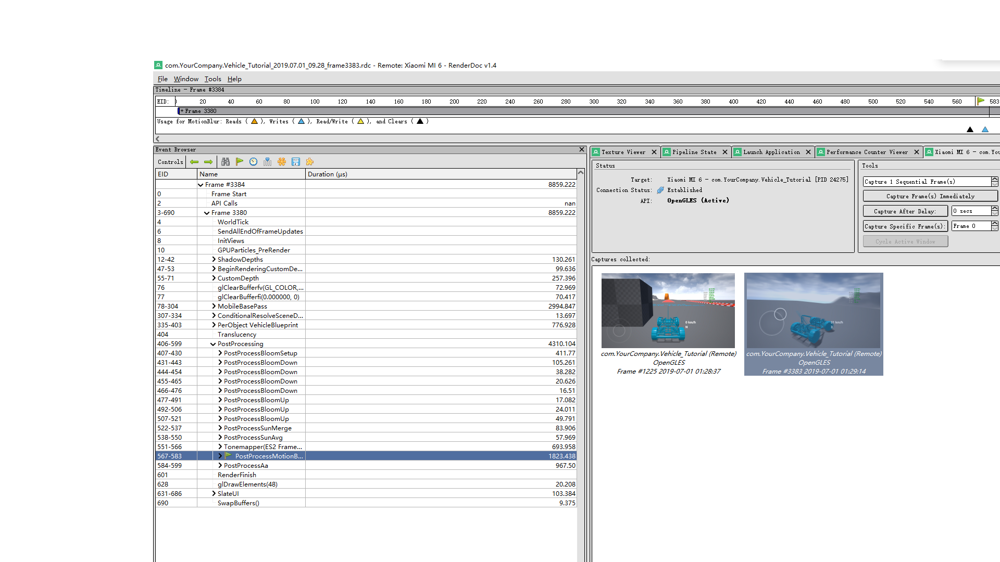
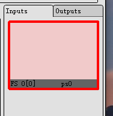
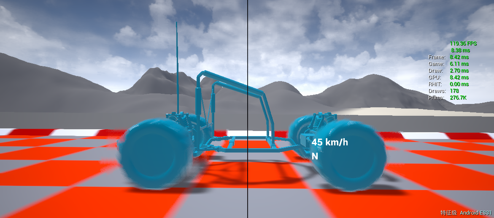
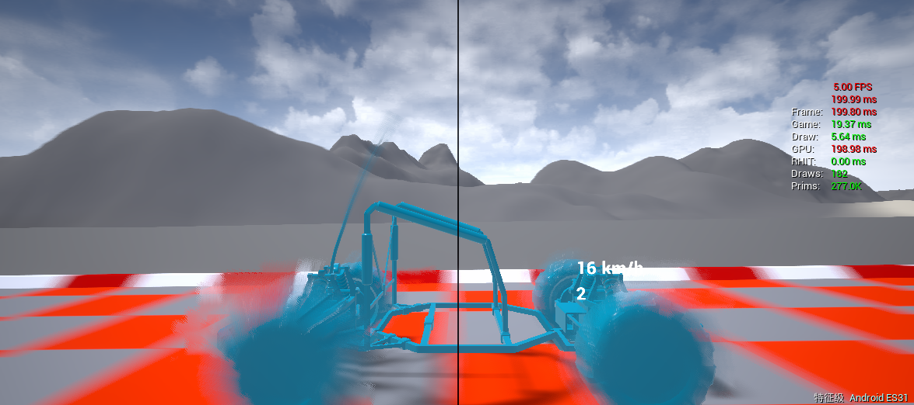
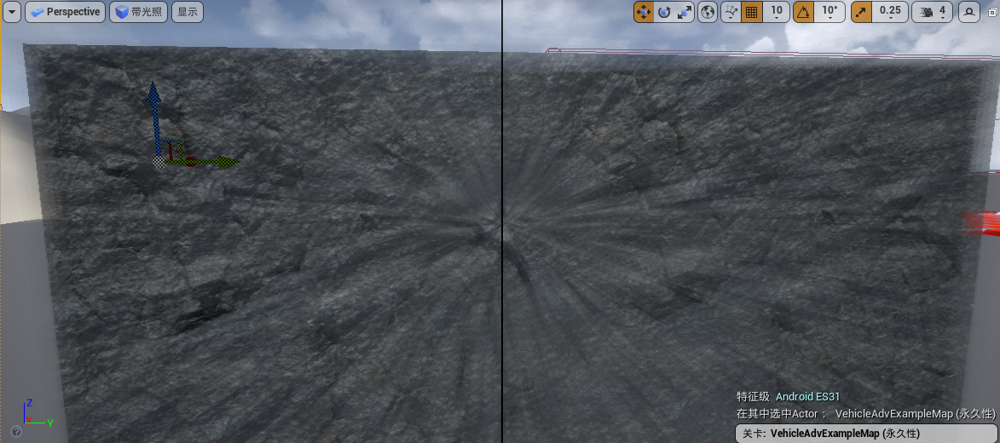
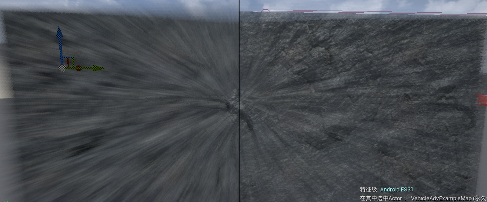
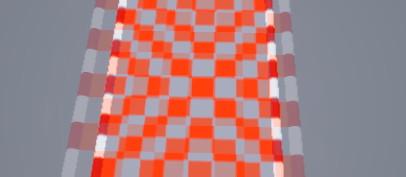
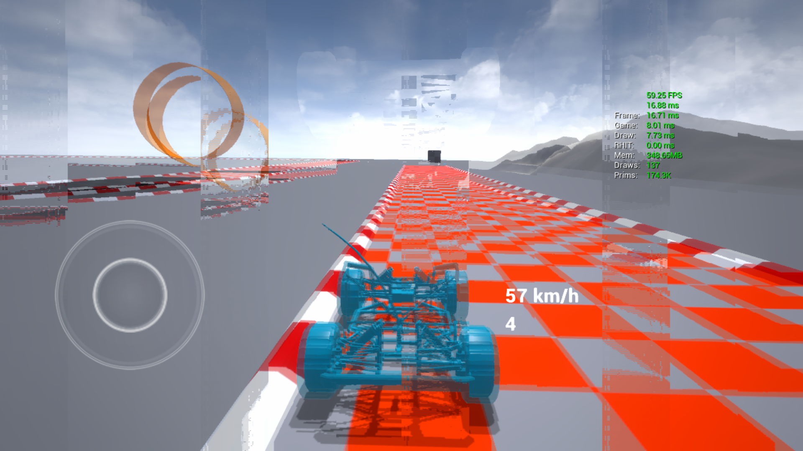

移动设备运动模糊-虚幻引擎
定位修改位置
MobileShadingRenderer.cpp 中 “FMobileSceneRenderer::Render”
自定义 Shader 编写
- Shader 对应的 .cpp 继承 FGlobalShader 类
- 将该 Shader Type 注册到 UE4 的列表
- 继承 TRenderingCompositePassBase，覆写 Process
- 组合 Shader
- 设置 State
- 绘制
目录结构
- Source/Runtime/Renderer/Private/PostProcess 存放 Passes
- PostProcessing.cpp FPostProcessing::ProcessES2 安卓设备渲染调用
- PostProcessMobile.cpp 含多个继承 TRenderingCompositePassBase 的类（ProcessES2 中使用）
- PostProcessMotionBlur.cpp 原运动模糊实现
- Source/Runtime/Renderer/Private/ 存放主渲染 Pipeline
- DeferredShadingRenderer.cpp（PC 端渲染入口）
- MobileShadingRenderer.cpp （移动端渲染入口 FMobileSceneRenderer::Render 中调用 FPostProcessing::ProcessES2）
调试方式
- r.ShaderDevelopmentMode 设置为 1
- ctrl+shift+. 重新编译着色器
实践
- Source/Runtime/Renderer/Private/PostProcess/MobilePostProcessMotionBlur.h .cpp 实现新 Pass，并覆写 Process
- 参考 PostProcessing.cpp line-1693 MotionBlur 如何将 Pass 放进 ::Process 中（Mobile 端是 ProcessES2），FPostProcessing::Process 后续被 ::Render 调用
- 创建 FRenderCompositePass * 变量
- FinalOutput = FRenderCompositeOutputRef(Pass)
- 使用本教程，将 RenderMyPass 添加到 RenderFog 之后，运行到 checkSlow(RHICmdList.IsOutsideRenderPass()) 抛出异常
- 引起原因：未查明
- 解决方案：SceneContext.BeginRenderingSceneColor 后未调用 SceneContext.FinishRenderingSceneColor
- 基础版本完成，我们能加入自行编写的全局着色器了
- 查找运动模糊在 ES2 中加入位置
- usf 在 PostProcess 目录下
- SceneView.h 中定义了众多坐标转换工具，使用 ClipToPrevClip 计算当像素在上一帧的位置
- 实现 GPU Gem 3 Motion Blur
- 利用引擎 Stencil 功能添加 Mask
- 
- 将 Sample 数量设置为参数
- 找出编辑器不正确表现的原因：ToneMapping 后纹理大小与实际输出大小不一致
- 
-
运动向量可视化
-
安卓设备调试
- 关闭 MSAA，获取深度
-
修复安卓图形 API 兼容性(TODO)
- 注意运动向量的计算
-
程序稳定性(TODO)
- 图形 API 坐标系
- 能否获取正确的深度材质（至少16位浮点数）
- 能否获取正确的 Mask
-
性能测试
- 
-
添加项
- 加一个 Pass 导出 Color.a
- 直接在 PostProcessing 里添加
-
直接计算 Velocity
- 测试性能
- RenderDoc 阴影渲染中有一个 PerObject Rendering，渲染场景中的动态物体，Velocity 中需要挑选出动态物体
-
Plan：挑选动态物体，使用 Velocity Rendering 渲染到纹理上，参阅网格体绘制官方文档
-
MotionBlur 前渲染 RG16F 的 Velocity
- RenderVelocities 添加到 Mobile
- PC ClearRenderTarget，后续没了，原因：没有 Register Velocity 到 Mobile
- 移动端 gl_clear 后未绘制，原因：AddMesh 对纹理格式进行判断，失败后，未添加 Mesh
- 完成此步骤
-
速度重建滤波
- 计算全屏 Velocity
- 算错了，previous 计算错误
- E:\UnrealEngine\Engine\Source\Runtime\Renderer\Private\VelocityRendering.cpp，GPUSkinCachePreviousPositionBuffer
- bool SupportsVelocity() const
- E:\UnrealEngine\Engine\Source\Runtime\Engine\Private\GPUSkinCache.cpp
- 重写 VelocityFlatten
- 计算全屏 Velocity
- 加一个 Pass 导出 Color.a
-
梳理
-
收尾工作
- MSAA 开启后，使用 FrameBufferFetch 获取深度
-
修复 StaticMesh 速度计算错误问题：RenderDoc 的问题，截取后 View PrevView 完全一样，未找到原因 不用 RenderDoc 抓取就没问题
-
效率优化
-
Decal 能获取正确的深度
- Lookupdevicez SceneTexturesCommon.ush
-
因为用了 FrameBufferFetch
-
ES2 若支持 fetch 就 fetch，否则使用 SceneDepthTexture
-
ES31 使用 depth fetch，否则 framebufferfetch color.a
-
跟踪 SceneDepthTexture 如何与 Surface 关联上的
- Surface 是 target
- texture 是 texture
- 一种东西的两种叫法？
- 关闭 MSAA 确实绑定了 Depth Texture
- 开启 MSAA，绑定了一张无效的 Texture 上
- Render 到了 renderbuffer，是否和 renderbuffer 只写有关
- 
-
切换 Render Target 能 Resolve ？ 实际只有 Color Resolve
Multisampling Considerations Multisampling is supported with the Default Framebuffer (through WGL/GLX_multisample) and/or Framebuffer Objects (through multisampled renderbuffers or textures, where supported). As explained in the article on Multisampling, a multisampled buffer must be resolved into a single sample before it can be displayed. When the default framebuffer uses multisampling, this resolving operation is automatic, occurring during framebuffer swapping (though reading from the framebuffer can cause it to happen anyway).
https://community.khronos.org/t/fbo-renderbuffer-vs-texture/65933
RBOs are like a texture with a hint - that you won’t expect some functionality from them. The driver can speedup rendering to them. Yet, on most modern cards, the performance difference is almost zero. Only on mobile hardware they can make any difference, to save battery - if the driver detects you’re properly using glClear on frame-start. Basically use RBs only if you know you’ll never need the data to be used as a texture.
https://stackoverflow.com/questions/17699087/multisampling-on-ios-cant-get-depth-texture 苹果上只 Resolve Color
-
结束
- 查看 Deferred Motion Blur 参数，为 Gem 3 提供思路
-
移植
- Unity Github 开源版本
- 效果一般般
- 
- 14年
- 当前先采取两个样本方向
- 可是采样实际速度发现，实际速度远大于MaxTile？？？？
- 看起来只有8个样本点，一边四个
-
完成几个场景对比，证明14Paper解决的问题
- 车轮对比 ok
- 
- 缩进对比 ok
- 
- 
-
原始颜色权重大：被抛弃的颜色过多导致
- wa 计算结果导致大量样本点权重为0，修复权重计算过程中的问题
- Unity Github 开源版本
问题列表
| List | 描述 |
|---|---|
| RenderVelocities | MSAA 情况下无法 Fetch 深度 |
| TODO | 描述 |
|---|---|
| Gem 3 可用版本 | 关于 Stencil 的用法，决定；Max Velocity 的限制 |
| Deferred 可用版本 | 检查 Velocity Depth Buffer 绑定，FullScreen 能否被优化掉 |
| 径向动态模糊 | - |
| 查看动态模糊已有参数 | - |
| 完成一个 Demo | 用于展示完成的工作 |
Resolve 含义
- MS->1S
- 移动端片上内存内容写回
性能
- 测试环境：小米6
- 分辨率：720p
| Motion Blur（GPU Gem 3，采样8bitColor，Stencil 1spp） | 1spp | 5spp | 10spp |
|---|---|---|---|
| - | 0.6ms | 1.3ms | 2.1ms |
| Motion Blur（GPU Gem 3，采样8bitColor，Stencil 1spp） | 4spp | 6spp | 8spp |
|---|---|---|---|
| - | 1.8ms | 2.3ms | 2.8ms |
| Motion Blur（GPU Gem 3，采样8bitColor，Stencil 1spp） | 1spp | 4spp | 6spp | 8spp |
|---|---|---|---|---|
| - | 0.9ms | 1.4ms | 1.8ms | 2.0ms |
| Motion Blur（GPU Gem 3，采样8bitColor，Stencil 1spp） | 1spp | 4spp | 6spp | 8spp |
|---|---|---|---|---|
| - | 0.6ms/1.1ms？ | - | - | - |
| Color.a to Depth | Time |
|---|---|
| - | 0.6ms |
| Custom Depth（仅载具 ~10w Vertex） | Time |
|---|---|
| - | 0.3ms |
| Render Velocities（仅载具 ~10w Vertex） | Time |
|---|---|
| - | 0.6ms |
| Flatten Velocity 4 Pass Downsample | 16x |
|---|---|
| - | 0.8ms |
| Scatter Velocity | - |
|---|---|
| - | 0.25ms |
| Full Screen Velocity | - |
|---|---|
| - | 1.3ms |
| Motion Blur（Deferred 中的，放在 Tone mapping 之后） | 16spp | 8spp | 6spp | 4spp |
|---|---|---|---|---|
| - | 10.4 ms | 4.7ms | 3.4ms | 2.5ms |
| Pass | Gem 3 | Deferred | 时间（720P） |
|---|---|---|---|
| Mesh Draw | |||
| Custom Depth | ✔ | 0.3ms | |
| Render Velocity | ✔ | 0.6ms | |
| PostProcessing | |||
| Copy Depth | ✔ | 0.6ms | |
| Full Screen Velocity | ✔ | 1.3ms | |
| MaxTile/Flatten | ✔ | 0.8ms | |
| NeighborMax | ✔ | 0.3ms | |
| Motion Blur Deferred | ✔ | - | |
| Motion Blur Gem 3 | ✔ | - | |
| Totoal 4spp | 2.7ms | 5.5ms | |
| Totoal 6spp | 3.3ms | 6.4ms | |
| Totoal 8spp | 3.7ms | 7.7ms |
Profile 性能分析
RenderDoc 每次 Profile 时间差异较大 motion-blur-profile.png
TODO
方案1： RenderVelocity（载具）->RenderVelocity（全屏+Depth）->Gather
讨论：
-
输入输出讨论
- Input Color RGB、A 为深度
- 采样、加权混合
-
位置讨论 ::Process
- ToneMapping 之后（采样带宽最小）
-
关于深度
- Color.a 全黑
- LookupDevicZ 用到的是 ？
- Android ES2 底层用到的是 OpenGL API？
-
关于预览渲染级别
- SM5、SM4、IOS、Android ES2、HTML5 和底层使用的 API（D3D、Vulkan、OpenGL）有什么关联？
- 图形 API 定义了自己的 Capability ，可以在 D3D 上使用 ES2 级别特性
- 定义 Feature Level 只是让 Shader 走另一套
-
坐标系
-
转换为世界坐标
- 当前已有 Z/W，利用 InvWVProjection + WVP 投射回上一帧
- 回算出 World 坐标
-
获取变换矩阵
- ShaderCompiler.cpp line-2675 GenerateInstacedStereoCode
- MobileBasePassVertexShader.usf line-72 TranslatedWorldToClip
- SceneView.cpp line-2221
- TranslatedWorldToClip
- ClipToTranslatedWorld
- line-247 Z=0 远平面/ Z=1 近平面
-
GenerateInstacedStereoCode 哇，自动生成 Shader 代码
-
Fatal Error: Shaders Expected a uniform buffer of struct type
- 方法：跟踪 Sunmask 参数 Bind 过程
- 现象：每次需要改动一次 Shader 后才能启动游戏
- 原因找到：序列化不正确
- 根据 Sunmask 修改 Serialize 函数
- Shader 载入正常
-
性能问题
- Post Process 和 Framebuffer Fetch 无关
-
查下 UV 和 NDC 坐标的关系
- OpenGL UV XY 朝向一致
- D3D 不一致
-
关于编辑器中采样不正确
- 编辑器初始纹理创建 1920x1040
- 采样超出边界时，得到黑色像素
- 后处理画的是三角形，RenderDoc 查看，利用了 GPU 光栅化的剔除功能
- UV 非全部覆盖屏幕的四边形，只覆盖了一部分，导致运动向量不正确
- 关键在于 DrawRect .cpp 文件里的控制参数
-
采样的问题
- 1 Sample Point，却有2种颜色？
- 编辑器里没问题，播放都有问题
- PostProcessAA 的问题，太恐怖了这效果
- 
-
DrawRectangle 分析
- InPosition 是个三角形，实际上需要借助 GPU 进行裁剪，我们仅使用三角形中截取的正方形区域，该区域 InPosition 范围为 [0, 1]。
- X，Y 为 Target 上的偏移量
- SizeX，SizeY 理解绘制区域大小
-
PosScaleBias 合起来理解为在 Target 上渲染的长方形位置、大小
-
U，V 为 Texture 上的偏移量
- SizeU，SizeV 为 Texel 数量
- UVScaleBias 合起来为 Texture 上的偏移量和大小
// SceneFilterRendering.cpp // Set up vertex uniform parameters for scaling and biasing the rectangle. // Note: Use DrawRectangle in the vertex shader to calculate the correct vertex position and uv. FDrawRectangleParameters Parameters; Parameters.PosScaleBias = FVector4(SizeX, SizeY, X, Y); Parameters.UVScaleBias = FVector4(SizeU, SizeV, U, V); Parameters.InvTargetSizeAndTextureSize = FVector4( 1.0f / TargetSize.X, 1.0f / TargetSize.Y, 1.0f / TextureSize.X, 1.0f / TextureSize.Y); // Common.ush /** Used for calculating vertex positions and UVs when drawing with DrawRectangle */ void DrawRectangle( in float4 InPosition, in float2 InTexCoord, out float4 OutPosition, out float2 OutTexCoord) { OutPosition = InPosition; OutPosition.xy = -1.0f + 2.0f * (DrawRectangleParameters.PosScaleBias.zw + (InPosition.xy * DrawRectangleParameters.PosScaleBias.xy)) * DrawRectangleParameters.InvTargetSizeAndTextureSize.xy; OutPosition.xy *= float2( 1, -1 ); OutTexCoord.xy = (DrawRectangleParameters.UVScaleBias.zw + (InTexCoord.xy * DrawRectangleParameters.UVScaleBias.xy)) * DrawRectangleParameters.InvTargetSizeAndTextureSize.zw; }
-
采样流程
- Position
- 采样使用 ToneMapping UV（和 Position 一致）
-
UE4-安卓调试配置
-
打包失败
- [INSTALL_FAILED_USER_RESTRICTED: Install canceled by user]
- 允许 App 通过 USB 安装
-
性能分析
- UE4 性能优化方法(工具篇)
- 移动端 GPU 分析
- adreno profiler
- NVIDIA Tegra Graphics Debugger
- ImgTec PVRTune and PVRTrace
- ARM Mali Graphics Debugger
- RenderDoc
- 靠目测 stat unit
- 上边都是错的，直接用 RenderDoc，自带时间分析
- 小米 6，RenderDoc 测试 10 样本 2.5 ms
-
GLSL-ES2 Motion 表现不正确
- 
- 关闭 MSAA 即可，MSAA 导致 Depth 获取失败
-
API 适配
- Stencil、Depth UV 仍是 FlipV 的
GLSL_ES2 渲染 ToneMapping 时纹理反转回来了
// PostProcessToneMap.usf #define NEEDTOSWITCHVERTICLEAXIS (ES2_PROFILE && COMPILER_GLSL_ES2) || (ES3_1_PROFILE && COMPILER_GLSL_ES3_1)
- 利用了以上宏进行判断
目前已知的需要注意的问题
- MSAA 导致 Depth Texture 无法获取
- ConditionResolveDepth 添加 Pass 强制写入 Depth
- Graphics API 坐标系导致采样不正确
- ToneMapping 前采样开销巨大（RGBA16）
- Motion 加在 Tonemapper 前，Depth 不正确，但是用 RenderDoc 采样后，又表现正常
解决方案 MSAA 无法得到深度
- PostProcess 最开始插入一个pass 把color.a 写入一张纹理
- 测试下 Decal、 开启 MSAA 是否真的有问题
GLSL_ES 兼容性
-
bool FMobileSceneRenderer::RequiresTranslucencyPass(FRHICommandListImmediate& RHICmdList, const FViewInfo& View) const
- 直接使用 Color.a 则无问题
-
使用 Depth Texture 有额外开销
- MSAA 不会 Resolve Depth Texture
-
UE4 着色器跨平台分析
- Nvidia GDC 2014
- Frame Buffer 上下反过来渲染：UV 就能正确采样了
- 问题在于，ToneMapping 正过来了...
- 先参考下 SM5 中 Velocity 的计算
- Velocity 计算一如既往 Last Clip Clip
- 采样照常采样？
-
直接计算 Vehicle 的速度向量
-
OpenGL UV 增加方向与
-
速度不正确
- 坐标系转换参考了 visualize motion 后，凑对了
- OpenGL 投影矩阵与 D3D 一致，Shader 某处做了处理，查阅
-
最终采样结果不正确，Velocity 横向采样？
计算 Velocity Buffer
Velocity 渲染结果有缺失
问题表现：
- RenderDoc 查看未通过 Depth Test
- Clear 前有值的被Clear且通不过 Depth Test
- Clear 前无值的通过了Depth Test
- Render 位置错了，使用了上一帧的 Depth Flatten 失败：
bool SupportsVelocity() const { return GPUSkinCachePreviousPositionBuffer.IsBound() || PrevTransformBuffer.IsBound() || (PrevTransform0.IsBound() && PrevTransform1.IsBound() && PrevTransform2.IsBound()) || //@todo MeshCommandPipeline - now that PreviousLocalToWorld is in the primitive uniform buffer, we can't look at whether the shader bound it to cull what gets rendered in velocity pass true; }
-
上边代码最后一个返回 true
-
继续查看
float4 PrevTranslatedWorldPosition = VertexFactoryGetPreviousWorldPosition( Input, VFIntermediates ); float4 VertexFactoryGetPreviousWorldPosition(FVertexFactoryInput Input, FVertexFactoryIntermediates Intermediates) float3 SkinPreviousPosition( FVertexFactoryInput Input, FVertexFactoryIntermediates Intermediates ) FBoneMatrix CalcPreviousBoneMatrix( FVertexFactoryInput Input ) FBoneMatrix GetPreviousBoneMatrix(int Index) OutEnvironment.SetDefine(TEXT("GPUSKIN_USE_BONES_SRV_BUFFER"), SupportsBonesBufferSRV(Platform) ? 1 : 0);
修改几个地方后，能够渲染出速度 需要排查具体那个因素导致的
#define GPUSKIN_USE_BONES_SRV_BUFFER 1 // Use a Buffer<float4> if 1, otherwise a uniform buffer
14 Motion Blur
- 纯使用 Vc 时，样本权重都很小，导致采样结果很淡
- 在速度非常大时会出现上述结果
- 速度极大的时候，MaxTile 速度甚至不如实际 Center 的速度？
- 解决了，Flatten 时候限制了最大速度，MotionBlurParameters.w
- Sample 时候路径很长，但采样路径很短
导师 Tips
目标：UE4 ES2 如何使用 Depth Texture、Depth Texture 在哪设置
-
SunMask 自动查找 Shader 中的 Texture 使用情况并进行绑定
- SceneRenderTargetParameters.h line-132
- PostProcessMobile.usf SunMaskPS_ES2
-
PostProcessMobile.cpp line-905 Bind
-
SceneTextureCommon.ush line-35 CalcSceneDepth
- 方法从 SceneTexturesStruct.SceneDepthTexture 采样
- SceneTexturesStruct 在 SceneRenderTarget
-
SunMask Pass 流程
- FRCPassPostProcessSunMaskES2::Process 中使用了 SetShader
- PostProcessMobile.cpp FRCPassPostProcessSunMaskES2::SetShader 根据参数创建 Shader
- Process 中根据 GetInputDesc(ePId_Input0) 来确认是否使用 DepthTexture/Color.a（usf 中采样 PostProcessInput0)
- ePId_Input0 在 Render 初始化 TRenderCompositexx 后 SetInput
-
SceneRenderTarget.cpp line-2362 MobileSceneColorBufferFormat 只有三种 FloatRGBA FloatR11G11B10 B8G8R8A8，若设备支持 HDR 默认为 PF_FloatRGBA
-
PostProcessMobile.cpp line-1075 若 Input 材质为 FloatR11G11B10 格式，在着色器中使用 DepthTexture
- PostProcessMobile.usf line-107 否则使用 Alpha 通道的深度表示
-
追踪 SceneTexturesStruct 设置/使用情况
- SceneRenderTarget.cpp line-2875 出现相关宏 与FSceneTexturesUniformParameters关联
- SceneRenderTarget.cpp line-3029 出现相关宏 与FMobileSceneTexturesUniformParameters关联
-
SceneRenderTarget.cpp line-3092 参数绑定方法
-
MobileShadingRenderer.cpp line-376 SceneDepth 局部变量
- 上述 SceneDepth 来源于 SceneRenderTarget.h/.cpp 中的 FSceneRenderTargets::SceneDepthZ
- 而 SceneDepthZ 又会在 Pass 构造时候，Bind 到对应的 SceneTexture 上
-
基础着色时，Depth 写入情况
- MobieBasePassPixelShader.usf Depth 写入 Color.a（HDR_LINIAR_64 开启情况下）
- MobileBasePass.cpp line-25 IsMobileHDR() 则设置 HDR_LINIAR_64
- 控制台变量 r.MobileHDR 变量非常重要
-
Pass 放在 ToneMapping 之后
- 直接读取 Depth Texture
深度获取
- SceneTexturesCommon.usf 中 CalcSceneDepth 函数调用 line-92 开始
参考资料
https://www.itread01.com/content/1538656694.html
https://tech.spaceapegames.com/2018/09/06/motion-blur-for-mobile-devices-in-unity/